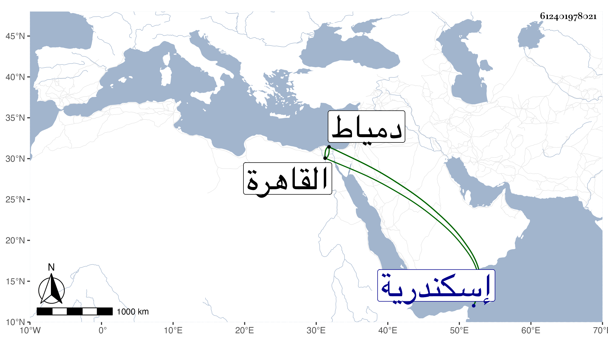

0902Sakhawi.DawLamic.ITO20230111-ara1.EIS1600.612401978021
Biography ID: 612401978021
456
عثمان بن جقمق المنصور الفخر أبو السعادات بن الظاهر أبي سعيد . ولد في ربيع الأول سنة تسع وثلاثين وثمانمائة . وأمه أم ولد اسمها زهراء . نشأ في حجر السعادة معتنيا بالفروسية بل اشتغل على الزين قاسم الحنفي وغيره وسمع الحديث على شيخنا وابن ناظر الصاحبة وابن بردس وابن الطجان وأجاز له جماعة باستدعاء الزين رضوان وغيره وقفت منهم على طائفة مكيين فمنهم من الرجال الزين بن عياش والموفق الأبي والقطب أبو الخير بن عبد القوي ومن النساء خديجة ابنة عبد الرحمن ابن صفية وصفية ابنة محمد بن عمر السكري ولا شك عندي أن فيمن أجازه من هو أقدم من هؤلاء ، واستقر بعد أبيه في السلطنة ولقب بالمنصور فلم يلبث إلا يسيرا ووثب عليه الأتابك أينال فكان الظفر له ولقب بالأشرف وأرسل بهذا إلى إسكندرية على العادة وقرأ بها على محمد بن عثمان البجائي شرح الخزرجية وعلى محمد بن عبد الكريم المغربي التلخيص في المعاني والبيان وكذا قرأ عليه في الصرف وعلى الشمس النوبي قصيدة في التجويد نظمها لأجله ثم قرأ عليه أيضا حين حول إلى دمياط شرح التصريف للتفتازاني ونظم قواعد الإعراب لأبن الهائم المسمى بالتحفة مع أرجوزة للنوبي سماها الرشفة المتممة للتحفة وغالب الرائية للشاطبي ونحو ثلث ألفيه ابن مالك وعلى إبراهيم العجلوني التحفة القدسية لأبن الهائم في الفرائض وايساغوجي في المنطق ، واستمر مقبلا على العلم متطلعا لكتبه التي حصل منها في كل فن نفائس مذاكرا مع كل من يرد عليه من الفضلاء والمشايخ كشيخه الشيخ قاسم حيث سافر له إلى هناك حتى تميز وبرع في الفقه وكثر استحضاره للمجمع أحد محافيظه بل درس قطعة من المنهاج للنووي في فروع الشافعية ولكثير من لتاريخ سيما البداية لأبن كثير مع تطلع لمعاني الحديث وإقبال على سماعه ومشاركة في فنون كثيرة كالأصلين بحيث يستحضر ابن الساعاتي في أصولهم والطب والعربية والعروض والموسيقى وحسن عشرته وكثرة أدبه ورقة طبعه وحرصه على الانعزال والمطالعة والتلاوة والصيام وصرف أوقاته في الطاعات وتحريه في نقل العلم وإعراضه عن التشاغل بأنواع الفروسية ومتعلقاتها مع تقدمه فيها وله تذكرة فيها أمور مهمة ونظم رشيق رقيق ، وقد حج في غضون إقامته بدمياط في أبهة تامة وختن أولاده وكان السلطان فمن دونه هناك ، وحرص على الاجتماع بي حين كان بالقاهرة فما قدر ، نعم حصل بعض تصانيفي وبلغني مزيد اغتباطه بذلك . مات بدمياط بالانحدار في يوم الخميس ثامن عشر المحرم سنة اثنتين وتسعين وورد الخبر بذلك بعد يومين فتوجه الأتابك والزمام لإحضاره ودفن عند أبيه بتربة قانباي وخلف بضعة عشر ولدا من أمهات شتى منهم إناث ثلاث أكبرهن خديجة مات منهن في الطاعون واحدة ومن الذكور ستة وأكبر الذكور عمر وكتبا كثيرة وقرر له تصوف بالأزبكية رحمه الله وعوضه الجنة .
